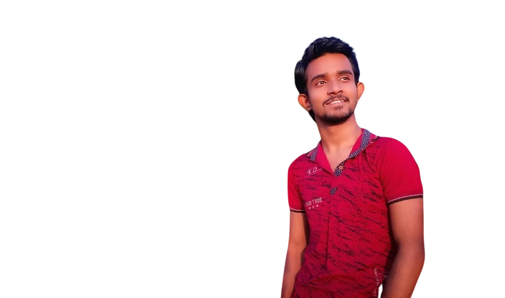

About Me
am Ankan Mandal, a passionate individual pursuing a Bachelor of
Technology in Information Technology. With a solid academic
foundation, I achieved 89% in secondary education at Holygarden
Model School and 81.7% in higher secondary education at Delhi Public
School, Durgapur. My diverse skill set includes web development
(front end), Android development (using Android Studio and Kotlin),
video editing in Adobe Premiere Pro, and graphic design in Adobe
Photoshop. I'm proficient in programming languages such as Java
(with Data Structures and Algorithms), C++, C, and have a basic
knowledge of Python. I have a keen interest in applying physics
concepts to the real world and enjoy hobbies like dancing and
painting.
